Network Design¶
Architecture — U-Net 2D (custom, from scratch)¶
SkiNet is a symmetric encoder–decoder network built entirely from scratch in PyTorch, without pre-trained backbones. The encoder path progressively compresses spatial resolution while doubling channel depth at each stage. The decoder path mirrors it, restoring resolution via transposed convolutions. Skip connections at every resolution level carry high-frequency spatial detail from encoder to decoder, preventing boundary information from being lost during downsampling.
Architecture diagram¶
{kind=link}
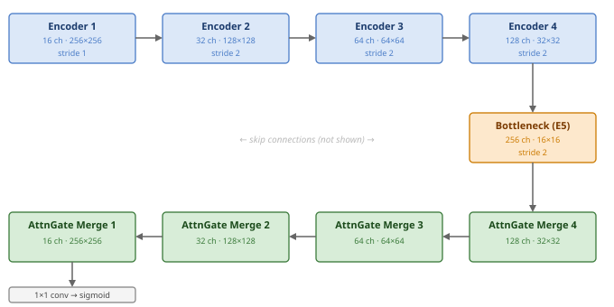
Skip connections (not shown) run from each encoder layer to its mirror decoder merge block. Each upsampling step uses a transposed convolution (stride 2), restoring the spatial dimensions halved by the corresponding encoder stage.¶
Block design¶
Encoder block — Classical (selected) (Ronneberger et al., MICCAI 2015)¶
Below is the encoder used in the final SkiNet (ClassicalEncoder). It consists of two sequential
Conv2d(3×3) → BatchNorm → ReLU layers per encoder stage: the first convolution
downsamples (stride 2), the second refines at the reduced resolution (stride 1).
The encoder block was selected in the architecture sweep (see Model selection below), wherethe he2 and se
encoders were also evaluated and appear under Candidate blocks.
h = Conv-BN-Act(x) # stride 2, downsamples spatial dims
y = Conv-BN-Act(h) # stride 1, refines at reduced resolution
{kind=link}
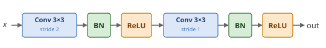
Classical encoder block — Conv 3×3 (stride 2) → BN → ReLU → Conv 3×3 (stride 1) → BN → ReLU.¶
Decoder block — transposed convolution upsampling¶
Each decoder stage begins by doubling the spatial resolution with a single
transposed convolution, followed by BatchNorm and ReLU. The kernel size is
set to encoder_kernel × encoder_stride = 3 × 2 = 6 rather than
the more common 2×2, which eliminates the uneven overlap pattern that
produces checkerboard artefacts in the output mask (Odena et al., 2016).
The stride of 2 exactly inverts the downsampling applied by the corresponding
encoder stage. The output of this block is passed to the attention-gated merge
block below alongside the skip connection.
y = Act(BN(ConvTranspose2d(x))) # kernel 6×6, stride 2: spatial ×2, channels ÷2
{kind=link}
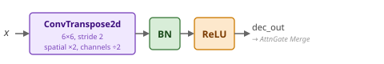
Decoder upsampling block — ConvTranspose2d 6×6 (stride 2, spatial ×2, channels ÷2) → BN → ReLU.¶
Merge block — Attention-gated (selected) (Oktay et al., MIDL 2018)¶
This is the merge used in the final SkiNet (AttentionGateMerge). Before merging, the skip connection is
gated by an additive attention gate: the upsampled decoder tensor acts as the gating signal g,
and g and the skip features x are each projected to an intermediate space, summed, then passed
through ReLU → 1×1 conv → BN → Sigmoid to produce a spatial attention map α ∈ [0, 1]. α multiplies
the raw skip features, selectively suppressing irrelevant background activations at the skip
connection.
{kind=link}
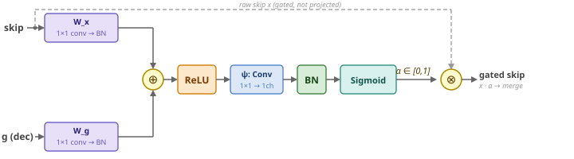
Additive attention gate — the decoder gating signal g and skip x are each projected (1×1 conv → BN), summed, then ReLU → 1×1 conv → BN → Sigmoid yields the spatial map α ∈ [0, 1]. α multiplies the raw (unprojected) skip x to produce the gated skip features fed into the merge.¶
The gated skip and the decoder tensor are then each projected through separate 3×3 convolutions and summed (rather than concatenated). This operation is algebraically equivalent to concatenation and convolution, but avoids the doubled-channel tensor in memory. The resulting merged sum is followed by two BN→ReLU→Conv refinement convolutions with an identity shortcut over the merged sum (the two-conv pre-activation “He2” pattern, just with attention gate; He et al., ECCV 2016).
:
attended_skip = AttentionGate(dec, skip) # α-gated skip features
merged = conv_x(dec) + conv_skip(attended_skip)
conv1 = Conv(Act(BN(merged)))
conv2 = Conv(Act(BN(conv1)))
output = conv2 + merged # identity shortcut
{kind=link}
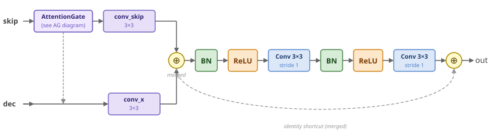
Attention-gate merge — skip is gated by α (W_x/W_g projections → ⊕ → ReLU → ψ → Sigmoid), then attended_skip and dec are each projected (3×3) and summed into merged; two pre-activation Conv blocks (BN→ReLU→Conv) refine, with an identity shortcut over merged.¶
Candidate blocks (considered, not selected)¶
The architecture sweep also evaluated the encoder and merge blocks below. None was selected for
the final SkiNet — they are documented here for completeness; the selection rationale is in
Model selection (next section). (LocalRefinementEncoder and the he1 / local_refinement merge
modes exist in the block registry but were not part of the sweep, so they are omitted here.)
He2 encoder (He2Encoder; He et al., ECCV 2016)¶
Pre-activation residual encoder — BN→ReLU precede each convolution, and a 1×1 stride-2 projection
shortcut P (matching the downsampled spatial size and channel count) is added back.
(use_residual=False is rejected for this block.)
h = Conv(BN-Act(x)) # downsamples (stride 2)
y = Conv(BN-Act(h)) + P(x) # P is a 1×1 projection shortcut
{kind=link}
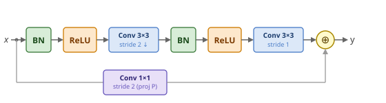
He2 encoder — pre-activation BN→ReLU→Conv twice, with a 1×1 stride-2 projection shortcut P(x) added to the refined output.¶
SE encoder (SEEncoder; He et al., ECCV 2016 + Hu et al., CVPR 2018)¶
The same pre-activation skeleton as He2, with a Squeeze-and-Excitation block recalibrating the convolution path (channel-wise attention) before the projection shortcut is added:
h = Conv(BN-Act(x)) # downsamples (stride 2)
conv2 = Conv(BN-Act(h)) # refines (stride 1)
y = SE(conv2) + P(x) # SE-recalibrated output + 1×1 projection shortcut
{kind=link}
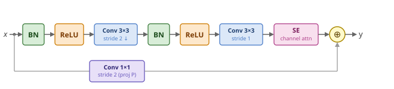
SE encoder — He2 skeleton with a Squeeze-and-Excitation channel-attention block on the conv path
(squeeze ratio se_reduction=16), summed with the 1×1 stride-2 projection shortcut P(x).¶
Classical merge (ClassicalMerge; Ronneberger et al., MICCAI 2015)¶
The original UNet merge, and the only mode that concatenates rather than projects-and-sums: decoder and skip features are concatenated along the channel dimension, then passed through two Conv-BN-Act blocks with no residual shortcut.
merged = concat([decoder_out, skip], dim=1)
h = Conv-BN-Act(merged)
y = Conv-BN-Act(h)
{kind=link}
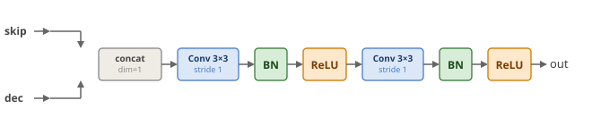
Classical merge — concatenate decoder and skip along channels, then Conv 3×3 → BN → ReLU twice, no residual shortcut.¶
He2 merge (He2Merge; He et al., ECCV 2016)¶
Projection-and-sum merge followed by two-conv pre-activation refinement with an identity shortcut, without an attention gate. This is exactly the refinement reused inside the selected attention-gated merge — the only difference there is the attention gate applied to the skip first.
merged = conv_skip(skip) + conv_dec(decoder_out)
conv1 = Conv( ReLU(BN(merged)) )
conv2 = Conv( ReLU(BN(conv1)) )
output = conv2 + merged # identity shortcut
{kind=link}
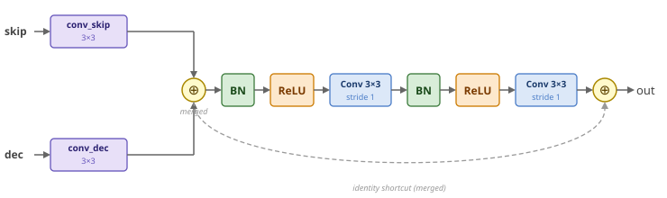
He2 merge — the skip and decoder inputs are projected separately, summed, refined by two pre-activation Conv blocks (BN→ReLU→Conv), then added back via an identity shortcut over the merged sum.¶
Model selection¶
Final architecture: classical encoder + attention-gate merge, chosen via the two-stage architecture sweep below.
Architecture sweep (conducted)¶
The encoder and merge blocks were selected in two stages.
E1 — single-seed screen. A 3×3 grid (classical · SE · He2 encoder × classical · He2 ·
attention-gate merge) was swept at four learning rates (1e-4, 3e-4, 6e-4, 1e-3), 36 single-seed
runs, ranked on tail-mean (last-10-epoch) val Dice. classical was the strongest encoder at
every LR (+0.010–0.016 over se) and lr = 3e-4 was the best LR for the leading architectures.
The he2 and attention_gate merges tied within single-seed noise (Δ ≈ 0.0006 tail-mean Dice),
so the screen could not separate them and deferred the tie-break to a paired multi-seed run.
E2 — 10-seed tie-break (decisive). classical + attention_gate (AG) and classical + he2
(HE2) were trained on 10 shared seeds (100–109) at lr = 3e-4, analysing the paired differences
Δ = AG − HE2. On the pre-registered primary metric — plateau Dice (mean of the last 10 epochs) —
AG wins: 0.8300 vs 0.8275 (Δ +0.0025, Wilcoxon p = 0.037, BCa 95 % CI [+0.0006, +0.0048],
d_z = +0.70, 8/10 seeds). Peak Dice and IoU are statistical ties (|Δ| < 0.001, p > 0.7).
HE2’s only confirmed advantage is throughput (135.3 vs 119.7 samples/s, +13 %, p = 0.002).
The winning combination is classical encoder + attention_gate merge.
Model-selection figures¶
The figures below summarise the 10-seed tie-break between the two finalist configurations (classical/attention-gate vs classical/He2).
Figure 1 — Paired slope graph¶
Each line connects one seed’s val Dice under both configurations. The slope direction shows which performed better for that seed.
{kind=link}
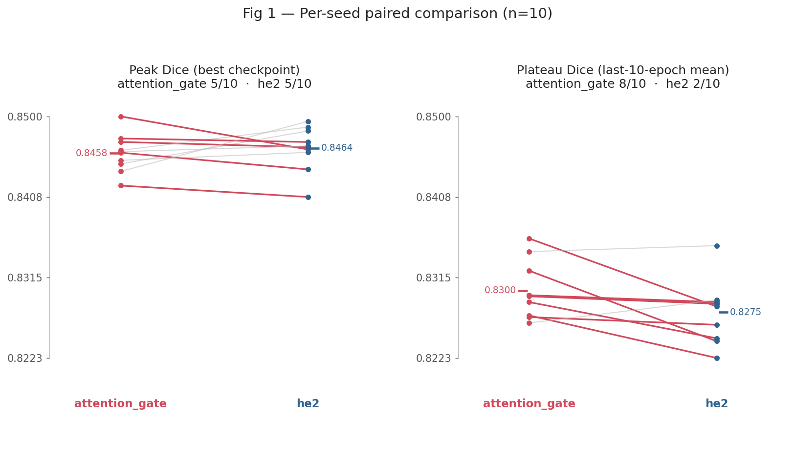
Fig 1. Per-seed val Dice for the two finalist configurations across the 10-seed tie-break. Plateau Dice tilts to attention-gate (8/10 seeds); peak Dice is an even split.¶
Figure 2 — Forest plot of paired differences¶
{kind=link}
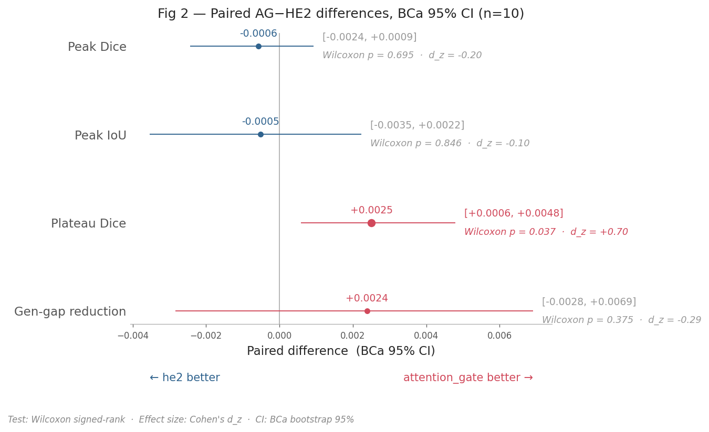
Fig 2. Forest plot of paired plateau-Dice differences (AG − He2) across 10 seeds; pooled mean +0.0025 (BCa 95 % CI [+0.0006, +0.0048], excludes zero).¶
Training setup¶
Setting |
Value |
|---|---|
Dataset |
ISIC 2017 — 2 000 train / 150 val / 600 test dermoscopic images |
Input resolution |
256×256 px, resized offline; normalised with dataset-computed mean & std |
Batch size |
8 per GPU × 2 GPUs = 16 effective (DDP, ddp_spawn) |
Max epochs |
200 |
Loss |
BCE-Dice: 0.5 × BCEWithLogitsLoss + 0.5 × Dice loss |
Optimiser |
Adam (β₁=0.9, β₂=0.999, ε=1e-8, weight decay=0) |
Learning rate |
3×10⁻⁴ |
LR schedule |
None in the final training setup |
Precision |
16-bit mixed (AMP, auto-set from accelerator) |
Hardware |
2 × NVIDIA T4 (Kaggle), PyTorch Lightning |
Weight init |
Kaiming normal (fan_in, ReLU) for all Conv2d/ConvTranspose2d; BN weights ~ N(1, 0.01) |
Checkpoint |
Best val Dice saved; optimal sigmoid threshold stored in checkpoint buffer |
Key design decisions and their supporting experiments:
Decision |
Experiment |
Notebook |
|---|---|---|
Batch size |
E0 batch size sweep |
|
Learning rate |
E1 LR sweep (lr in [1e-3, 6e-4, 3e-4, 1e-4]) |
|
Architecture (encoder/merge modes) |
E2 10-seed tiebreak |
|
LR scheduler |
E3 10-seed scheduler tiebreak (cosine annealing vs ReduceLROnPlateau) |
|
Threshold |
E4 threshold sweep |
|
Production model |
EF model selection |
Batch size rationale. Throughput sweep (bs 2→64, 2×T4): bs=8 is the smallest batch on the plateau (≥81% of peak throughput in both augmented and non-augmented conditions) and the last point before the time-per-step inflection. Augmentations add negligible cost at this size. Peak GPU memory: 0.43 GB/GPU.
Learning rate rationale. 5-point log-spaced sweep [1e-4 … 3e-3], AdamW, 2×T4, 100 epochs. lr=3×10⁻⁴ achieved the highest mean val Dice (0.806), lowest epoch variance (σ=0.018), and cleanest convergence. Consistent with two prior Adam sweeps. lr=3×10⁻³ caused clear degradation (mean Dice −0.018, convergence to 0.80 delayed by 35 epochs).
LR schedule rationale. Cosine annealing (T_max=300, η_min=1×10⁻⁶). E3 settled this with a
10-seed paired tiebreak (cosine vs ReduceLROnPlateau, seeds 100–109, classical+attention_gate
at lr=3e-4). The two schedules are statistically indistinguishable on every quality and cost
axis. Across all five metrics the paired Wilcoxon p-values are 0.32 (plateau Dice), 0.43 (peak
Dice), 0.43 (peak IoU), 0.70 (gen-gap) and 0.85 (throughput) — none below 0.05 — and every BCa
95% CI includes zero (e.g. plateau Dice Δ=+0.0015, CI [−0.0006, +0.0038]; peak Dice Δ=−0.0007,
CI [−0.0024, +0.0006]).
With quality a tie, cosine can be chosen on the standard grounds of determinism and reproducibility: its LR trajectory is fully specified by epoch count, whereas plateau’s depends on the validation-metric trajectory, adding a moving part and a source of run-to-run variance.
Secondary, and consistent with this: cosine reaches its best checkpoint earlier (mean epoch 125 vs 161, ≈22% earlier,
8/10 seeds, Wilcoxon p=0.020) — but at the current fixed max_epochs this yields no wall-clock
saving (full-run duration is equal, ~46 min) and would only convert to a compute saving if early
stopping were added. See E3.
Decay-vs-no-decay (post-hoc). A 1-seed pilot showed no quality difference between cosine and flat LR, so the scheduler was dropped before E4. A post-hoc comparison of E3 cosine (10 seeds) against E4 flat LR (10 seeds, same architecture and lr) on plateau Dice suggests cosine is better: Δ=+0.0042, BCa 95% CI [+0.0015, +0.0069] — entirely above zero (p=0.017, unpaired rank test). The 1-seed pilot was underpowered and missed this effect.
⚠ The E4 decision to drop the scheduler was made on insufficient evidence. This comparison is unpaired — E3 and E4 were separate experiments with different purposes, not a controlled flat-vs-cosine study — so the finding is indicative rather than conclusive. A dedicated paired 10-seed flat-vs-cosine experiment would be needed to confirm. Until then, E4 onward uses flat LR (
use_lr_scheduler: false) as a pragmatic choice that is retrospectively questionable on plateau Dice.
Figure 3 — Paired slope graph (cosine vs ReduceLROnPlateau, 10 seeds)¶
{kind=link}
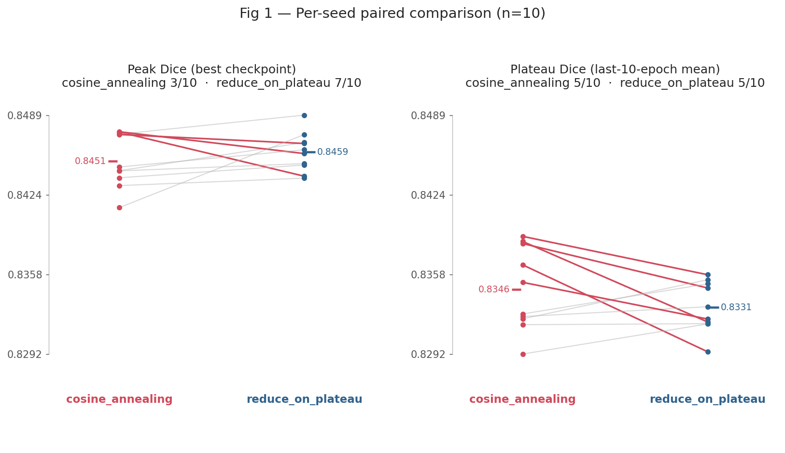
Fig 3. Per-seed val Dice for cosine annealing vs ReduceLROnPlateau across the 10-seed tie-break. Lines are nearly flat — both schedules track each other within seed noise.¶
Figure 4 — Forest plot of paired differences (cosine − plateau)¶
{kind=link}
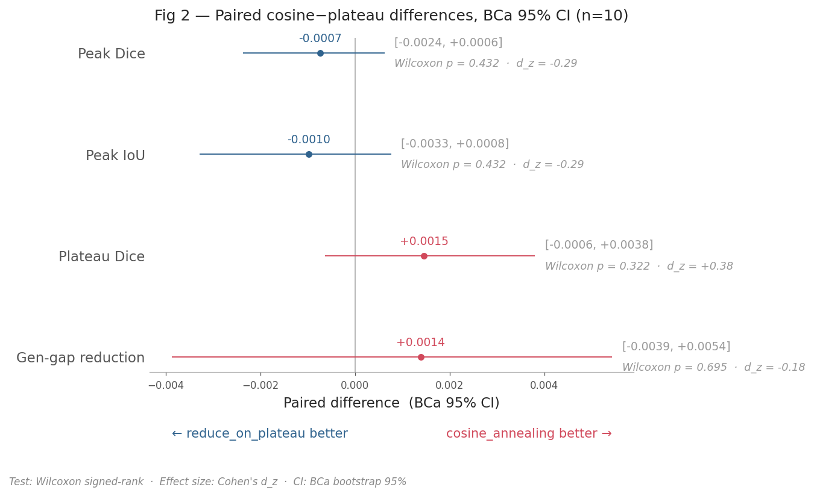
Fig 4. Paired plateau-Dice differences (cosine − plateau) across 10 seeds; pooled mean +0.0015 (BCa 95 % CI [−0.0006, +0.0038], spans zero — schedules are indistinguishable).¶
Figure 5 — Cosine annealing vs flat LR (unpaired, post-hoc)¶
{kind=link}
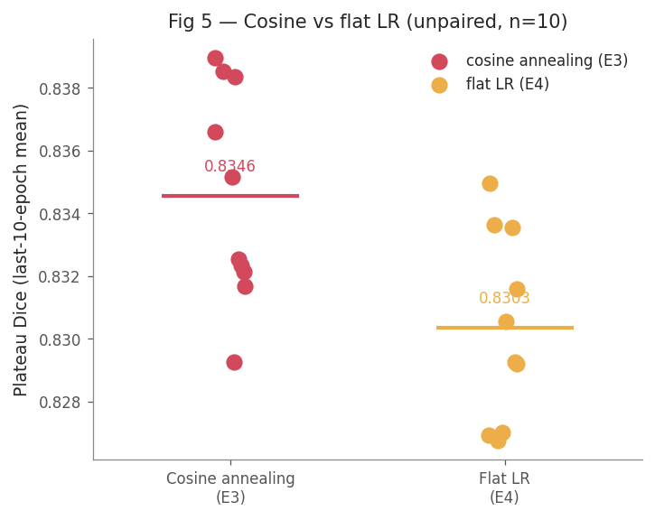
Fig 5. Plateau Dice distribution for cosine annealing (E3, 10 seeds) vs flat LR (E4, 10 seeds). Horizontal bars are group means. Note: unpaired — seeds ran in separate experiments.¶
Figure 6 — Mean difference with BCa 95 % CI (cosine − flat LR)¶
{kind=link}
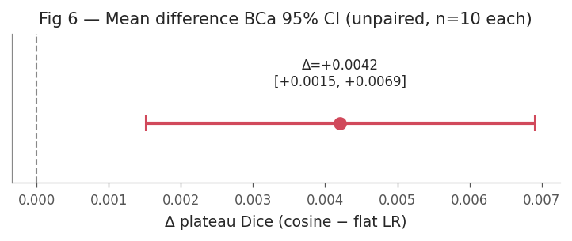
Fig 6. Post-hoc mean plateau-Dice difference (cosine − flat LR); Δ=+0.0042, BCa 95 % CI [+0.0015, +0.0069] — entirely above zero (unpaired, n=10 each).¶
Augmentation pipeline (training only)¶
Type |
Transforms |
|---|---|
Spatial |
Square symmetry (D₄ group flips/rotations), affine (scale · translate · rotate ±20°), perspective, elastic deformation |
Photometric |
Colour jitter (brightness, contrast, saturation, hue), Gaussian blur, Gaussian noise |
Normalisation |
Per-channel standardisation: μ = [0.699, 0.556, 0.5121], σ = [0.1576, 0.1562, 0.1706]. |
Stats are computed on the raw uint8 images (before any augmentation) from the training split only. |
Inference pipeline¶
Image resized to 256×256 and normalised with the training-set statistics above.
Forward pass through U-Net; raw logits passed through sigmoid → probabilities ∈ [0, 1].
Threshold of 0.5 is applied to produce the binary mask. E4 experiment E4-isic2017-unet2d-threshold-selection.ipynb evaluated whether replacing the default τ = 0.5 with a validation-tuned threshold τ* would have yielded an improvement.
Mask returned to the caller at 256×256; the web app overlays it on the original image.